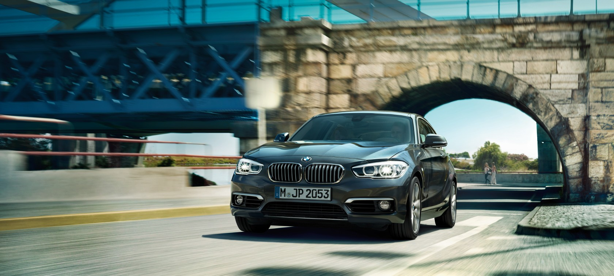

Немецкая компания BMW — один из лидеров премиум-сегмента автомобильного рынка. Автомобили марки представлены практически в каждом классе. В модельном ряду BMW можно подобрать машину для любых целей — от компактного хетчбэка до крупного представительского седана или габаритного кроссовера. Постоянно растет
количество спортивных модификаций моделей. Компания считается одним из передовых разработчиков двигателей. Специалисты моторостроения BMW часто привлекаются другими автомобильными компаниями.

